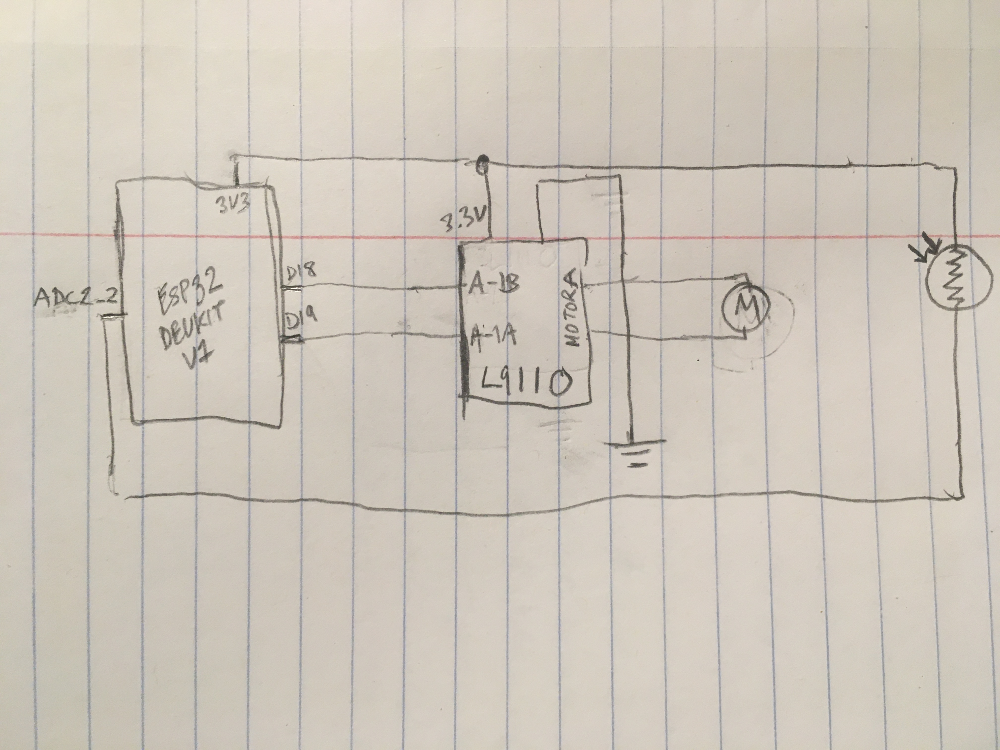

<div class="container">
<p class="margin"> </p>
<h3>Week 4: Microcontroller Programming </h3>
<p class="margin"> </p>
<div class="row">
<div class="col">
<!--<h4>Kinetic Sculpture <a href="./kinetic_sculpture.f3d" download>(download project)</a></h4>-->
<p>
I managed to get my kinetic sculpture working! After tearing it apart to get at the broken part, reassembling it,
and adding another guide to reduce twisting on the vertical movement, it finally went up and down correctly. I am
especially pleased that the cardboard stem fit snuggly between its outer ring and inner piece and that it looks
more like a flower. I'm too nervous to glue it again, so it's taped together instead.
</p>
</div>
</div>
<div class="row">
<div class="col">
<p>
For the ESP32 programming, I sort of revisted my original concept of a kinetic sculpture indicating time and connected a photoresistor to
the board so the vertical movement could be controlled by light. To test out the idea, I had it simply read the value
of the photoresistor from an analog pin and run the motor if the photoresistor showed values matching the ones I saw when
I covered it. Here's the code I used:
</p>
</div>
</div>
<div class="row">
<div class="col">
<pre><code>
const int photoPin = 2;
const int A1A = 19;
const int A1B = 18;
int photoVal;
void setup() {
Serial.begin(9600);
pinMode(photoPin, INPUT);
pinMode(A1A, OUTPUT);
pinMode(A1B, OUTPUT);
digitalWrite(A1A, LOW);
digitalWrite(A1B, LOW);
}
void loop() {
photoVal = analogRead(photoPin); // ~2100 is normal, 3600 under phone light
if (photoVal <= 200) {
digitalWrite(A1A, HIGH);
}
else {
digitalWrite(A1A, LOW);
}
}
</code></pre>
</div>
</div>
<div class="row">
<div class="col">
<p>
A gif of it working and a schematic of the circuit:
</p>
</div>
</div>
<div class="row">
<div class="col-sm d-flex justify-content-center">
<img width="60%" src="img/flower_1.gif">
</div>
<div class="col-sm d-flex justify-content-center">

</div>
</div>
<br>
<div class="row">
<div class="col">
<p>
With that working as intended, I turned to my actual idea. My goal was to have the flower be open in bright
light and closed in the dark, like the daisy it was originally based on. I now know that using a stepper
motor would have been better for setting the motor to certain positions, but I only had the basic yellow DC
motor. To estimate position, I used the value of 120 rpm I'd found online to calculate how many seconds a full revolution
of the pin driving the vertical motion would take. The flower has gear ratios of 2:1 and 45:13, which came to 17.33 rpm for the pin,
or 1730.7 ms per half revolution. Starting with the flower all the way open, I planned to run the motor for that
duration any time it should switch between closed and open. However, I'd failed to consider that the 120 rpm
was for the motor unattached to anything, so 1730.7 ms was too short. I ended up timing how long a full revolution
of the largest gear took and using half that time to estimate half the rotation.
</p>
<p>
The program tracks whether the flower is open or closed. If bright light hits the photoresistor while the flower's
closed, the flower opens, and vice versa. Because it can't set position and has to rely on timing to estimate where
the flower is in its cycle, once the motor starts running it can't switch from opening to closing until the full
half rotation has run. Here's the loop() code and the flower responding to light:
</p>
</div>
</div>
<div class="row">
<div class="col">
<pre><code>
void loop() {
unsigned long current_ms = millis();
// in somewhat dim room ~2100 is normal, 3600 under phone cam
photoVal = analogRead(photoPin);
// motor running
if ((motor_state == 1) && (current_ms - prev_ms >= rot_time)) {
digitalWrite(A1A, LOW);
motor_state = 0;
}
// motor not running
else {
// closed and bright
if ((flower_state == 0) && (photoVal >= 3600)) {
digitalWrite(A1A, HIGH);
motor_state = 1;
flower_state = 1;
prev_ms = millis();
}
// open and dark
else if ((flower_state == 1) && (photoVal <= 500)) {
digitalWrite(A1A, HIGH);
motor_state = 1;
flower_state = 0;
prev_ms = millis();
}
}
}
</code></pre>
</div>
<div class="col">
<iframe width="315" height="560"
src="https://www.youtube.com/embed/qg61pnoVnmo"
title="YouTube video player"
frameborder="0"
allow="accelerometer; autoplay; clipboard-write; encrypted-media; gyroscope; picture-in-picture; web-share"
allowfullscreen></iframe>
</div>
</div>
<div class="row">
</div>
</div>